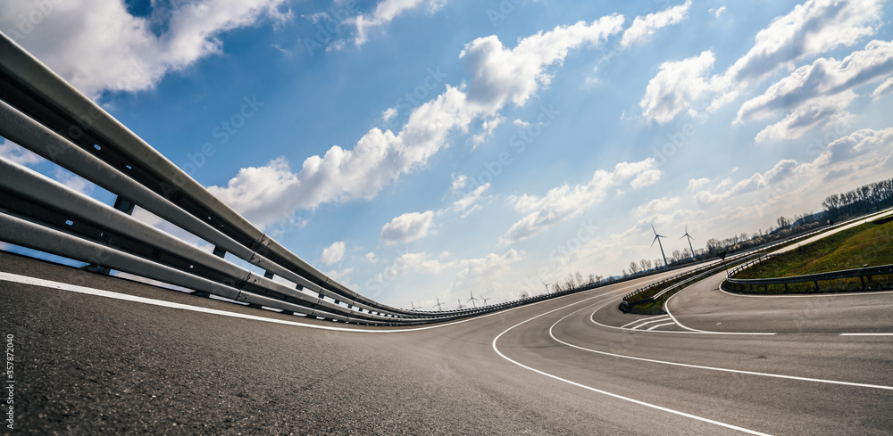
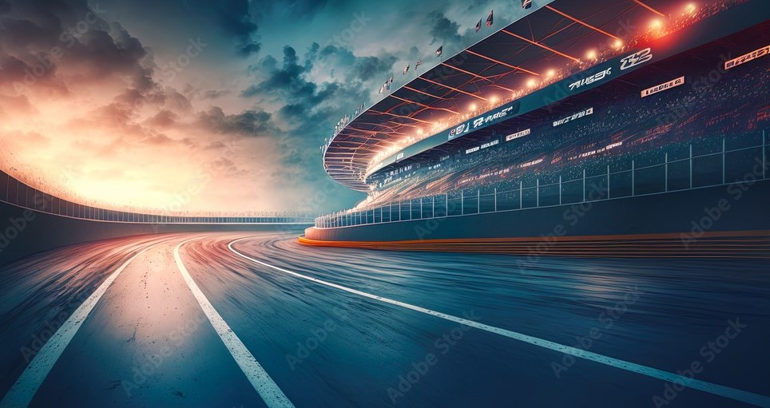
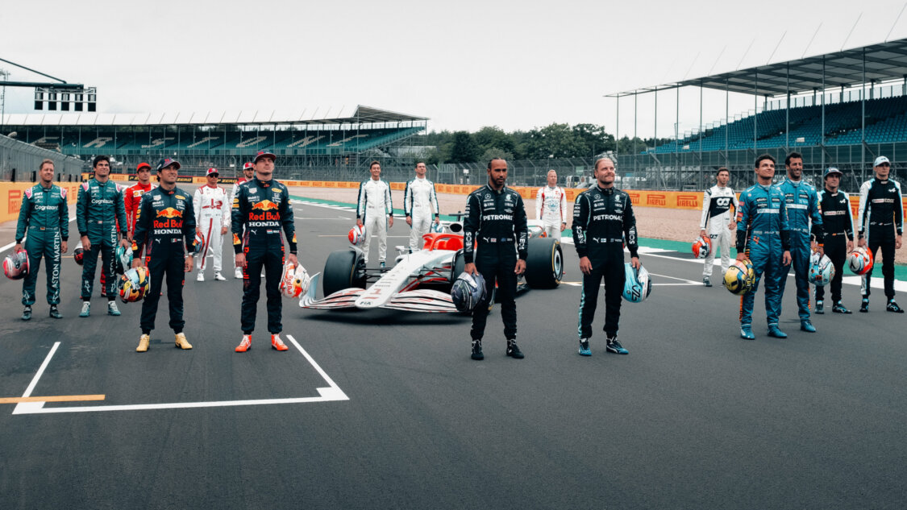
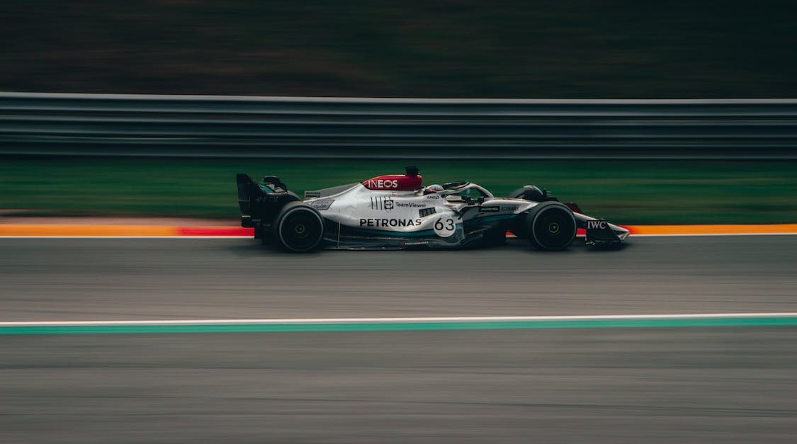

Hi! Welcome to Formula One webpage. Formula One is a large community also it is one of the most critical sport with lots of technicalities and innovation.
Ten teams fight to win evry year. Hope you have fun!!
Formula One is a motorsport in which different teams compete in multiple
Grand Prix races. Each team engineers its own Formula One car which drivers race around a track. Races take place in different countries
around the world, with the most famous including Monaco, Britain and Japan. The FIA Formula One World Championship has been one of the
premier forms of racing around the world since its inaugural season in 1950.
Currently 2023 Race Season is going on.

Different Types of Circuits Used in Formula One
Race Circuit
Street Circuit
Road Circuit
Hybrid Circuit
Race/Road Circuit

Top 5 Difficult Circuit
Circuit de Monaco, Monaco
Suzuka Circuit, Japan
Circuit de Spa-Francorchamps, Belgium
Silverstone Circuit, UK
Circuit Gilles Villeneuve, Canada

Top 5 Drivers of F1
Lewis Hamilton - 103 wins
Michael Schumacher - 91 wins
Sebastian Vettel - 53 wins
Alain Prost - 51 wins
Max Verstappen - 48 wins

Top 5 Classic Races in F1
Adelaide 1986
Suzuka 1989
Abu Dhabi 2010
Fuji 1976
Jerez 1997
Top 5 Fastest Lap
Driver
Fastest Lap Time
Lewis Hamilton
1:16.627
Valtteri Bottas
1:16.804
Sebastian Vettel
1:16.841
Charles Leclerc
1:16.909
Sebastian Vettel
1:16.886
About me
I am Shashi Kiran Nagulapalli, I am currently pursuing Masters in Computer Science. Hope you like my webpage. If you are interested click on the link below to know my favorite drive in F1.